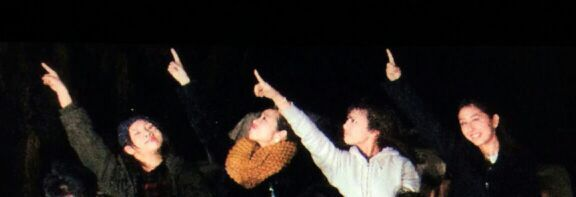

やあ〜〜〜〜〜\(*´ω｀*)/
あみ、ろてぃ、ひな、ちはる、あれ...かずみは？？笑

夢に向かって突っ走れーーーー 。
走るー走るー 俺ーたーちー
改めまして こんばんわ*´▽`*
Rotty だよ〜う..
昨日は まひろ、かずみ、まいやん、れいか、みさの5人で ユニット曲 やってきたよ！
フォーメーションの移動とかねっ //
歌の確認とかね。
にしても、あの曲は キー高いね！！
本番ライブとかでも 綺麗に歌えたらいいね！(*´ー｀*)
うんっ るんるん♪
ほいっ、ってところでね
昨日 入りきらんかった質問返しぃ〜.
☆うちの部屋でね、ろってぃーの個人PV見てたら
ママが入ってきてね「この まひろって子美人やねぇ。ねねころに似てない？」って急に言ってビックリした(´・Д・)
★まず、個人PV見てくれてありがとう！
お母様 ありがとうございます。嬉しゅう〜(T▽T)
でもね〜あんね〜 ろってぃ-'sままさんも言ってた！
顔の作りの配置が似とるって *^^*
横顔の雰囲気と 丸顔やけど アゴがキュッと
してるところが似とるって... ♪るん
☆最近テストが多くてイライラしちゃうんだけど
ろってぃーのストレス解消方ってある？
★テストが多くてイライラしちゃう解消方だったらねぇ〜うん！
周りと比べずにさっ、自分は自分,
あせらず自分のペースで１つずつ正確に
こなしていけばいいんだよ*^^*
それとか、まあろってぃーならねえ、笑
音楽かけて歌ったり踊ったり...
ノリノリなテンションをキープしつつ
その勢いのまま机と向き合うと(・ω・)┛
さあっ！ やってみよう // 笑
☆洋楽好きですか？
★好きだよ〜！
ONE DIRECTIONの映画見てから
あの人達の音楽 好きになったよ！
☆ろってぃーはいつも元気なイメージがあるけど
無理しないでね(T-T)？
★ありがと〜う
ろってぃーは 何があっても前向きっ元気やさかい(´▽`)
☆ろってぃーのダンスと、TVのお歌で、ろってぃー推すて決めたのだ！！ & NOGIBINGOの時 ろってぃ-の歌声を聞いて涙したのを思い出した。ろってぃ-！沢山の歌を聴かせてね。
★ろってぃ-は 、そう言ってもらえることが
本当に心から嬉しいのです！
人の心に響く音楽ができる人になるのが夢です♪
ありがとう.
☆ずっと さゆりん単推しやったけど、
ろってぃ-のこと最近好きになりました。
これから、ろってぃ-のブログ絶対コメントするね !!!
★おっと*^^* 嬉しいなあ ))) ありがとうっ ！
コメント楽しみにしてます！！
あっ そーいえば 日曜 全国握手会
さゆりんとペアだっ*^^*
最高 ！！！
ばいば〜い ♪//
今日もお仕事頑張っりました ///
のし ろってぃー。